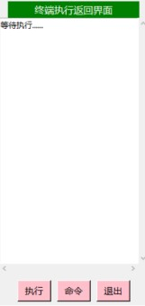

命令运行
命令模拟器支持以下命令运行的方式：

/）。
命令模拟器支持读取行为包、资源包中新增的项目（仅限于注册 ID）：
命令模拟器支持对用户的命令进行语法检查，根据版本判断命令的语法，这将影响命令的语法检查和命令最终的运行效果。 命令在世界内运行并影响世界数据，用户可根据生成的反馈信息检查命令的对错与否。
命令方块
命令模拟器通过 txt 文件在世界内注册命令方块。你可以在 save_world/世界名字/command_blocks 下创建 txt 文件开始编写命令方块。
所有在这个目录下的 txt 文件都会参与注册命令方块。
命令模拟器生成的世界会将主世界维度的 x 为 1600 ~ 1695，z 为 1600 ~ 1695 的区域设置为命令方块部署区域， 超出该区域的命令方块将不再运行。
注册语法
注册命令方块支持的语法有以下四种：
① start <posx> <posy> <posz> ② [属性] [MC命令] [MC命令] [MC命令] …… ③ [属性] empty ④ #注释内容
start 语法表示从某个局部位置开始部署命令方块，局部位置一定要满足以下条件：
x 为 0 到 95，y 为 0 到 383，z 为 0 到 95。
在世界内的命令方块将在 (1600,-64,1600) 加上局部位置后开始布置。
当声明了 start 语法后，默认的命令方块属性会重置为
[循环, y+, 无条件, 常开, 0]。
属性是选填参数，表示该位置的命令方块具体设置，可填参数 (x+、x-、y+、y-、z-、z+、0、1、2、3、4、5。) (循环/连锁/脉冲)(有条件/无条件)(红石/常开)(延时)，参数可以使用逗号或分号隔开。
下一个命令方块会自动按照朝向参数布置，并且会继承上一个命令方块的所有属性，可以重新声明新的属性参数进行覆盖。
用于插入一个空白的命令方块。
用于插入一行注释内容，注释不影响命令方块的结构。
下面将使用一个例子进行解析。
start 2 0 25 # 设置起始位置 1602 -64 1625，并将命令方块属性重置 say aaaa # 位置 1602 -64 1625 为无条件 常开 延时为 0 的循环命令方块（朝向 y+） [z+, 连锁, 有条件, 1]testfor aaaa # 位置 1602 -63 1625 为 有条件 常开 延时为 1 的连锁命令方块（朝向 z+） [无条件]testfor bbbb # 位置 1602 -63 1626 为 无条件 常开 延时为 1 的连锁命令方块（朝向 z+） testfor bbbb # 位置 1602 -63 1627 为 无条件 常开 延时为 1 的连锁命令方块（朝向 z+）
#reload 终端命令来对文件进行语法检查，
检查通过后，命令方块才会写入世界。
注意：注册完成并写入游戏的红石控制命令方块只能接受红石块的激活响应。
MC 函数
命令模拟器可以读取行为包中的函数并正常执行，用户想要载入函数，首先应该先制作行为包。
命令模拟器位于 main.py 目录中，在 functionality 文件夹内会自动生成 example 文件夹。
example 文件夹里的 example_bp 就是一个行为包的模板，
用户可以直接将该行为包复制进 save_world\世界名字\behavior_packs 内。
如果用户想执行某一个版本的命令语法，请打开行为包内的 manifest.json，
找到 min_engine_version 参数并修改即可。
execute 新语法需要将 min_engine_version 参数设置为 [1,19,50] 及以上。
min_engine_version 参数设置完成后，在 functions 里就可以开始编辑理想中的 MC 函数了。
#reload 终端命令来对文件进行语法检查，
检查通过后，函数才会写入世界。
终端命令
终端关键字
终端关键字是对终端命令进行控制的语法关键字，命令模拟器支持以下两种语法关键字。
① pass <int> ② end
pass 是跳过指令，int 代表跳过几行终端、调试或 MC 指令。
end 是提前结束指令，当遇到 end 关键字时，终端命令终止运行。
内置命令
终端命令是命令模拟器对调试参数设置的内置特殊命令，命令模拟器支持以下终端命令。
如果以 # 开头但并不符合以下终端命令的格式，将会当做注释处理。
#reload
将行为包中的函数和用户的命令方块注册文件全部重新进行语法检查和加载。 如果含有语法错误，则会在检查完毕后自动弹出语法反馈的窗口。 只有在语法检查完全通过后，文件数据才能被写入世界、生成命令方块视图、以及创建结构。
#testing <TestTime:int> <OpenWeb:bool>
<TestArea_x1:int> <TestArea_y1:int> <TestArea_z1:int>
<TestArea_x2:int> <TestArea_y2:int> <TestArea_z2:int>
格式 1 #command tick_start_loop <Time:int> <command> 格式 2 #command tick_end_loop <Time:int> <command> 格式 3 #command tick_start_delay <Time:int> <command> 格式 4 #command tick_end_delay <Time:int> <command>
命令须知
一些命令并没有完全模拟其特性，这些命令将在下方一一陈述。